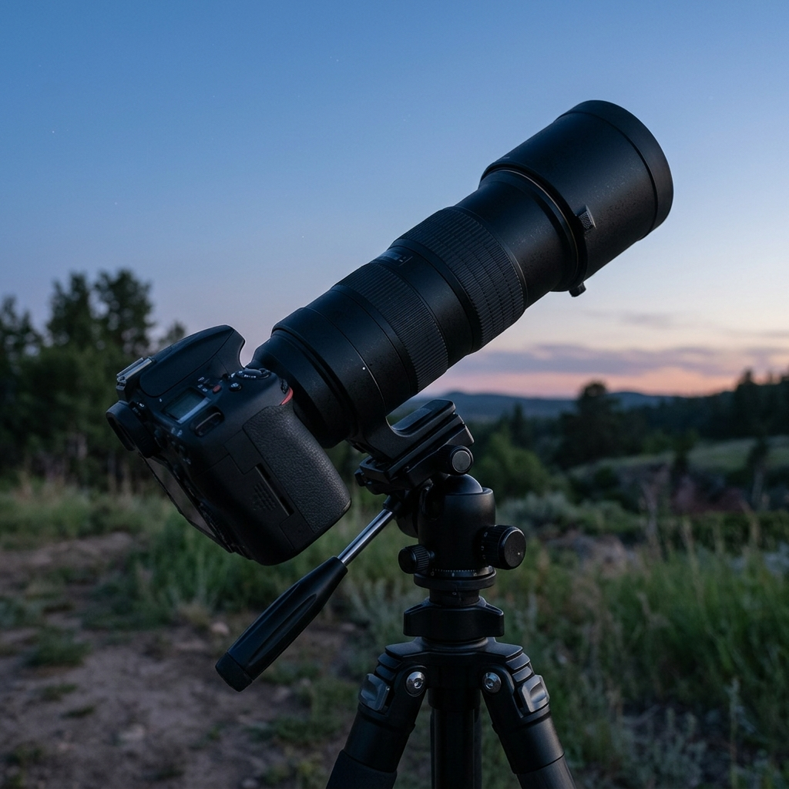
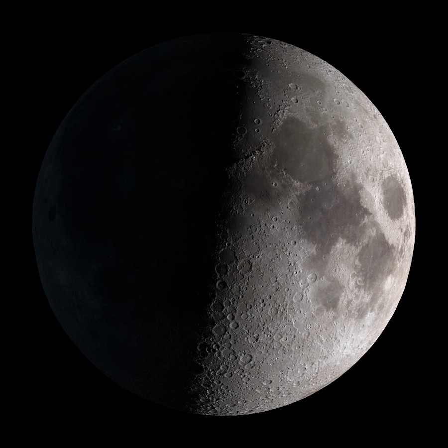

Why Start With the Moon
The Moon is the easiest thing in the night sky to photograph. It's bright, it's big, and it doesn't need a dark site. You can shoot it from a city balcony with the streetlights on.
It's also forgiving. The Moon is lit by direct sunlight, so exposures are short. It only moves its own width across the sky every two minutes or so, which means you don't need a tracking mount. A regular camera and a long lens will do.
The Gear

Here's what you need, and why:
- A camera with manual mode. Any DSLR or mirrorless works. A crop-sensor camera is a small bonus: with the same lens, the Moon fills about 1.5 times more of the frame.
- A long lens, 200mm or more. A 70-300mm zoom is a great start. The longer the lens, the bigger the Moon.
- A sturdy tripod. Long lenses magnify every tiny movement. A light breeze or a finger on the shutter button is enough to blur the shot.
- A remote shutter or the 2-second timer. That way you're not touching the camera while it takes the picture.
Focal length decides how big the Moon looks. Here's a rough rule: divide the focal length by 110 to get the Moon's size on the sensor in millimeters. At 300mm, that's about 2.7mm, a small disc you'll crop later. At 800mm, it's about 7.3mm, almost half the height of a crop sensor.
The Lens in the Photo
The camera above has a 420-800mm super telephoto zoom. Lenses like this are popular with beginners because they're cheap, often under $150, and they get you real Moon detail. The catch is that they're fully manual. There's no autofocus, you set the aperture by hand on the lens, and its widest setting is only about f/8. It attaches with a T-mount adapter made for your camera brand. For a target as bright as the Moon, those trade-offs barely matter.
No DSLR? Use Your Phone
You can still get a good shot. If your phone has a telephoto lens, use it. Tap the Moon to focus, then drag the exposure down until the craters show. Or try the binocular trick: hold your phone camera up to one eyepiece of a pair of binoculars and line it up until the Moon fills the view. It takes some patience, but it works.
Camera Settings
Start here and adjust:
- Mode: Manual
- ISO: 100
- Aperture: f/8
- Shutter speed: 1/125s for a half Moon, 1/250s for a full Moon
- Focus: Manual. Turn on live view, zoom in 10x on the Moon's edge, and turn the focus ring until the craters look crisp.
- File format: RAW
If the Moon comes out as a white blob with no detail, it's overexposed. Use a faster shutter speed. Trust the histogram, not the screen.
Pick the Right Night
Most beginners wait for the full Moon. That's actually the worst time to shoot it. At full Moon the Sun is right behind you, so there are almost no shadows and the surface looks flat.
Try a first-quarter Moon instead, about a week after the new Moon. Along the terminator, the line between day and night, sunlight hits the surface at a low angle. Crater walls cast long shadows and the terrain stands out.
Shoot when the Moon is high in the sky, too. Near the horizon you're looking through more air, which blurs detail and gives the Moon an orange tint.

What You're Looking At
The dark patches are called maria, Latin for "seas." Early astronomers thought they were water. They're actually flat plains of volcanic rock, left by lava flows more than three billion years ago. The bright, rough areas are the highlands. They're older and covered in overlapping craters.
Near the terminator you'll see individual craters with sharp rims and shadowed floors. Some have a small peak in the middle, pushed up as the ground rebounded after the impact.
Fun Facts About the Moon
- It's not bigger at the horizon. A rising Moon looks huge, but that's an optical illusion. Photograph it low and again high in the sky, and it's the same size in both shots.
- We always see the same side. The Moon spins exactly once per orbit, so the same face always points at Earth. Nobody saw the far side until the Soviet Luna 3 probe photographed it in 1959.
- It's drifting away. The Moon moves about 3.8 centimeters farther from Earth every year, roughly as fast as your fingernails grow.
After the Shot
Take 20 or 30 frames, not just one. Pick the sharpest, or stack them in free software like AutoStakkert! and RegiStax to cut noise. Then crop, add a little contrast, and sharpen lightly. Too much sharpening leaves bright halos around the edge.
The Moon changes every night. Shoot it again next week and you'll get a completely different picture.